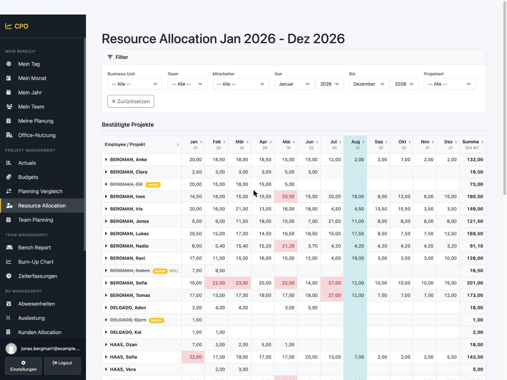
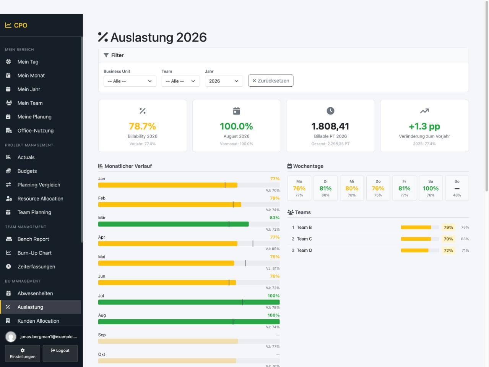
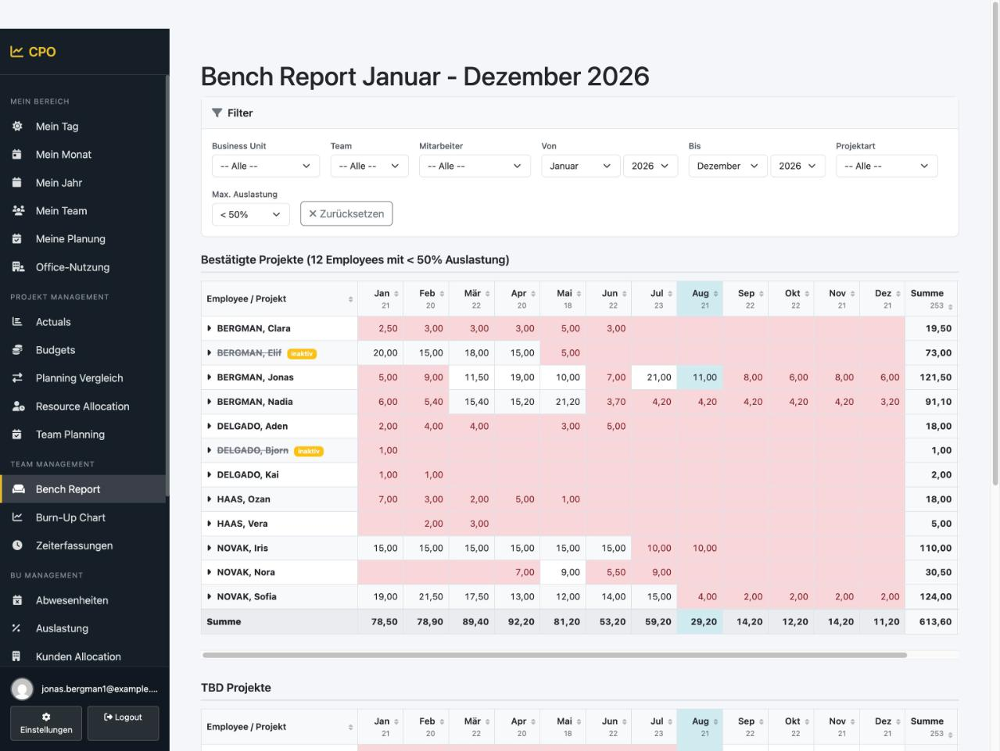
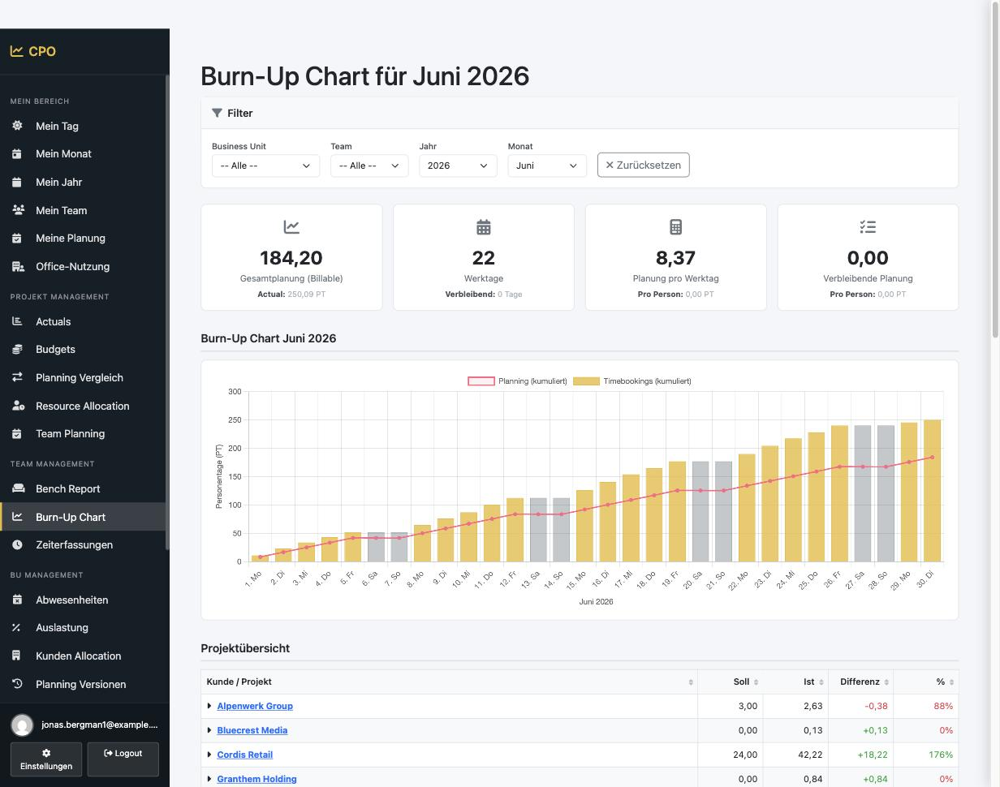
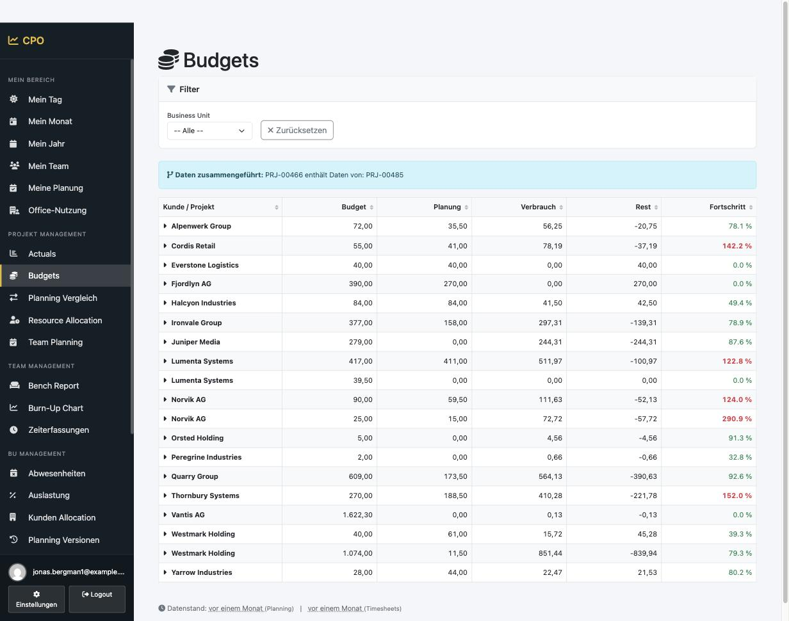
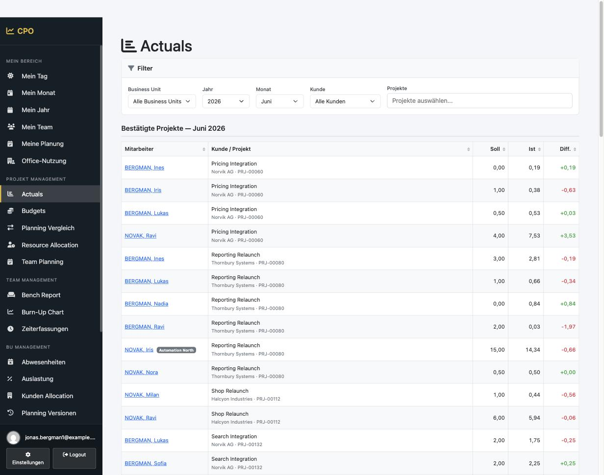
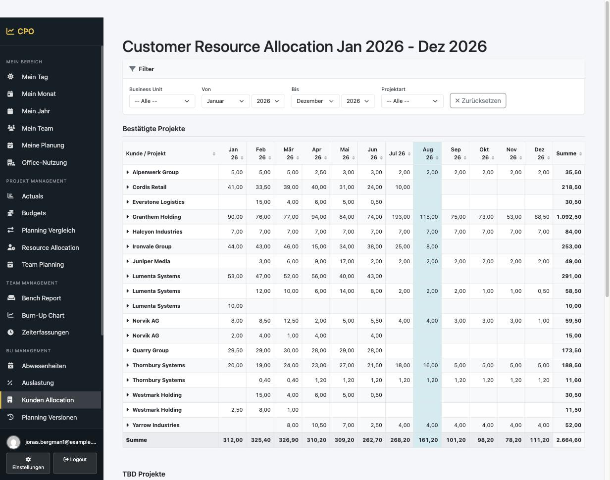
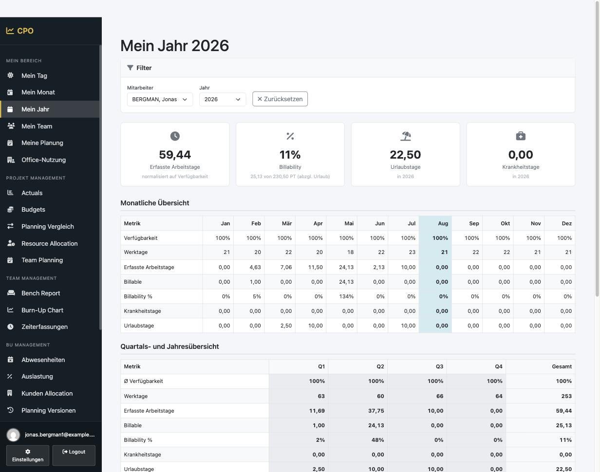

Internal business application
Controlling and resource planning inside an IT and digital agency: who is booked on which project, what was actually delivered, and where the next gap in the schedule opens up. I built it for my own job as Senior Business Unit Manager - the person who needed the numbers and the person who wrote the code were the same, which shows in every design decision.
Capacity planning lived in spreadsheets - one per business unit, each with its own conventions. Actual hours lived somewhere else entirely, in a central administration tool the planners could read but not shape. The two never met without somebody exporting, pasting and reformatting, and by the time a plan-versus-actual comparison existed it described a month that was already over.
The questions the business actually asked were simple, and none of them could be answered quickly: Who is unstaffed next month? Is this project still inside its budget? Did we plan what we ended up delivering? CPO exists to make those three questions cheap.
Buying something off the shelf was never really on the table. The data is confidential - staffing, rates, utilisation, customer budgets - so handing it to a SaaS vendor would have meant a procurement and compliance exercise longer than the build itself. Self-built and self-hosted was the answer to a governance question first, and a technical preference second.
Demo data. These screenshots come from a local instance. Every person, customer, project and business unit shown is a randomly generated placeholder - no real name appears anywhere.








Symfony 7.4 on PHP 8.3 with PostgreSQL 16, served by FrankenPHP. The frontend is server-rendered Twig with AssetMapper and an import map - no bundler, no node build step in the deployment path. API Platform exposes the resources that other tools consume, EasyAdmin carries the back office so that plumbing screens cost hours rather than weeks.
Anything slow or scheduled runs outside the request: a separate worker container consumes the Messenger queue and dispatches Scheduler tasks, so imports and recalculations never block a user. Domain logic lives in services, with PHPStan and PHPUnit in CI to keep the calculation-heavy parts honest.
Delivery is fully automated: GitHub Actions builds the image, pushes it to a container registry and verifies the deployed /health endpoint; the servers pull the new image themselves. Secrets live in an encrypted vault rather than in the compose file, and every release is summarised in a changelog that users see once, as a modal after login.
It runs on infrastructure the company controls, not on managed cloud services - which is why the whole stack is deliberately boring: two containers, one database, no vendor that needs a data-processing agreement.
Most of the difficulty was not in CPO but at its edge. The authoritative source of hours and budgets is a central administration tool with no public API and no prospect of getting one, so the integration is built on an interface I reverse-engineered from the application's own traffic: session-based authentication, HTML and JSON responses that were never meant to be consumed by anything but a browser, and rate limits nobody documented.
That makes the upstream side hostile terrain, and the client is written accordingly - parallel requests with backoff, a session refresh that heals itself, a full request log so any figure can be traced back to the exact response it came from, and a banner in the UI the moment upstream credentials stop working, instead of numbers that quietly go stale. Every import is idempotent, because the only safe assumption about a reverse-engineered source is that it will change without warning.
The second lesson was about trust. A planning tool is only used if its numbers survive being challenged in a meeting, so plans are versioned and auditable, and every derived figure - utilisation, billability, remaining budget - has a definition someone can look up. Getting that right mattered far more to adoption than any feature on the roadmap.